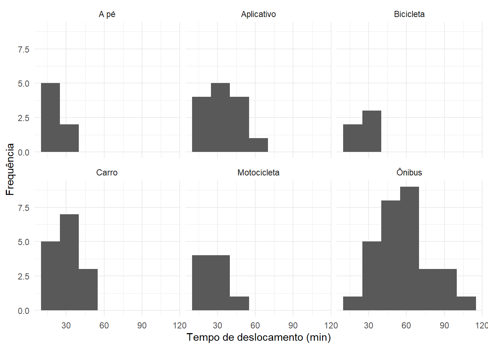
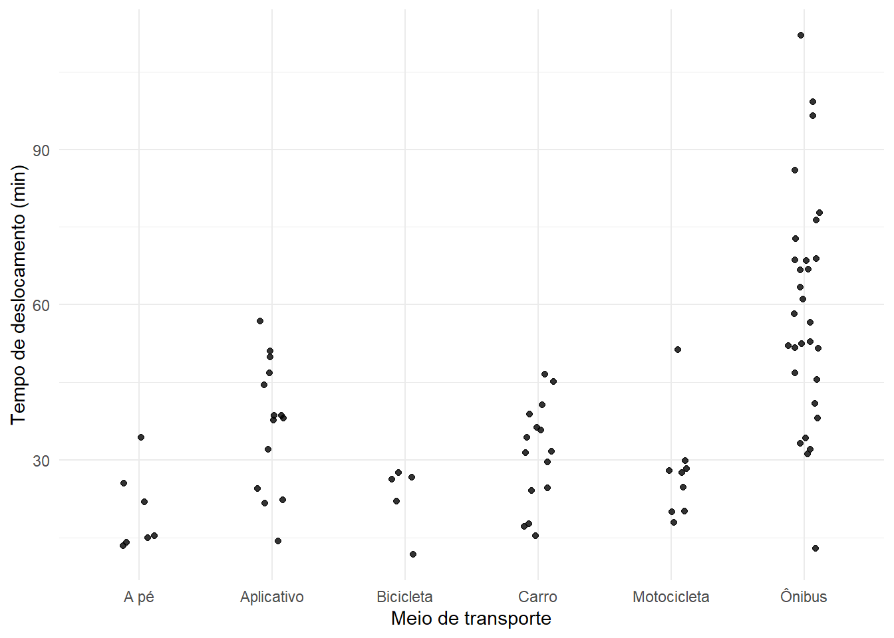
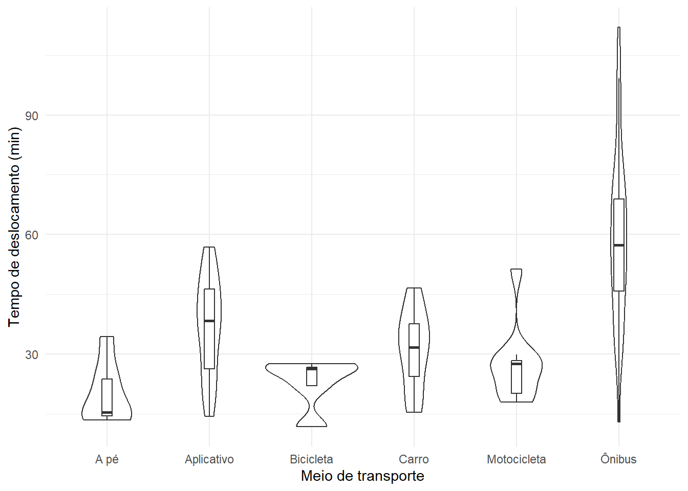
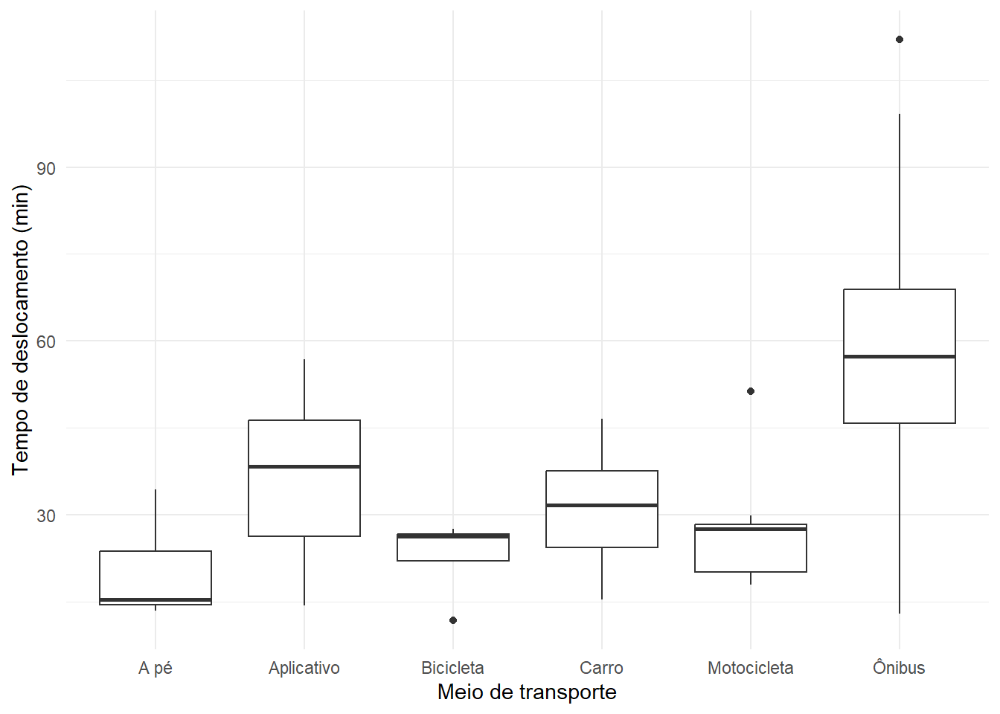
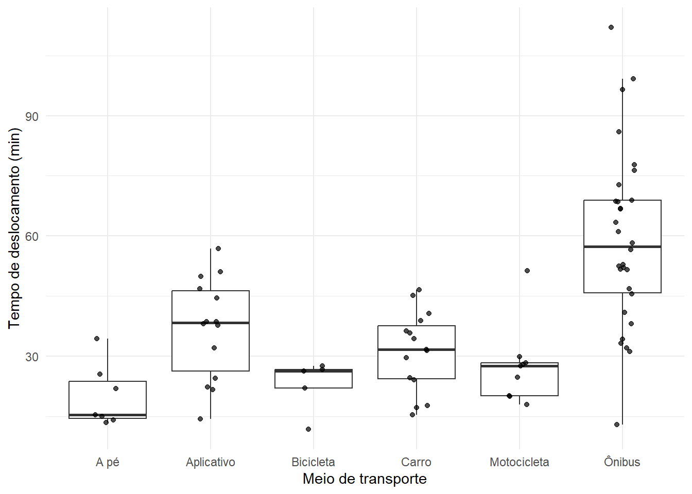
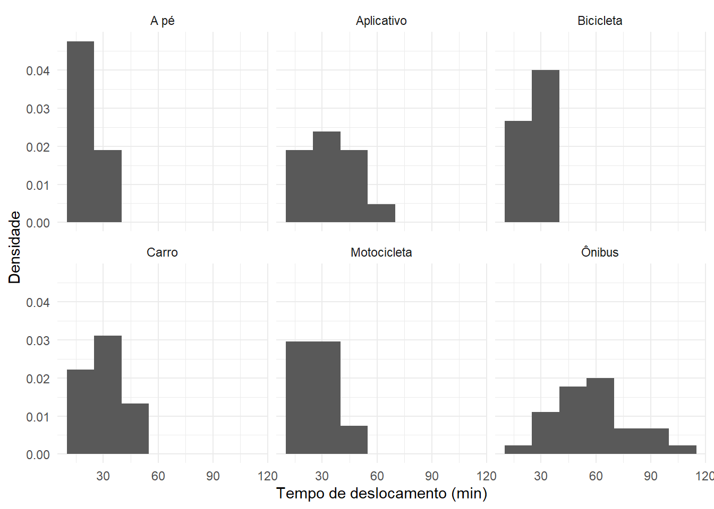
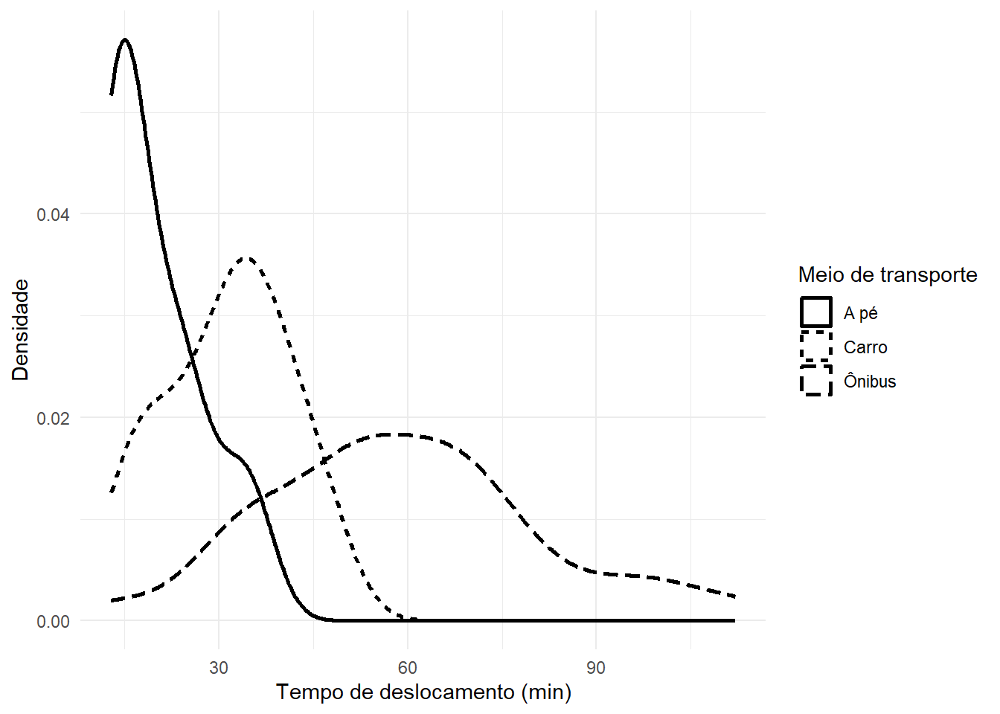
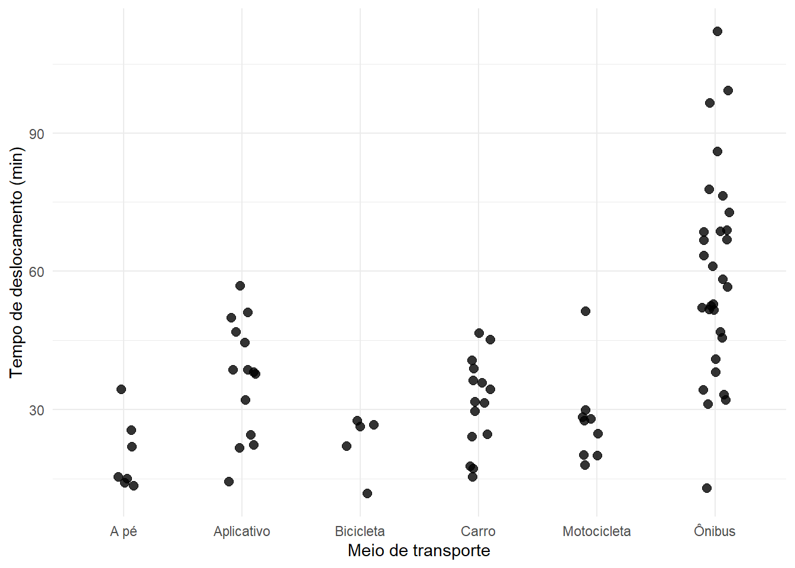
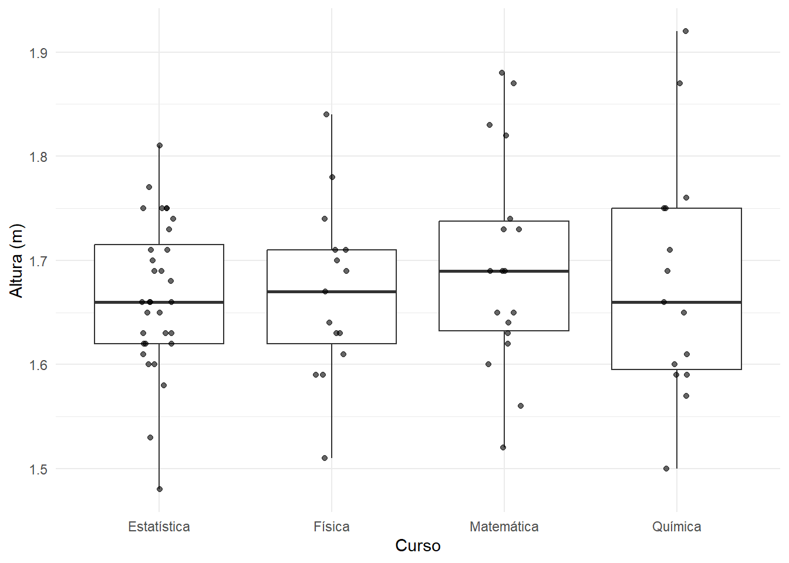

11 Associação entre uma variável qualitativa e uma quantitativa
Até aqui, estudamos três situações importantes:
- uma variável por vez, na análise univariada;
- duas variáveis qualitativas, por meio de tabelas de contingência e distribuições condicionais;
- duas variáveis quantitativas, por meio de diagramas de dispersão, covariância, correlação e reta de tendência.
Agora consideraremos um terceiro tipo de problema bivariado: a análise conjunta de uma variável qualitativa e uma variável quantitativa.
Exemplos:
- meio de transporte e tempo de deslocamento;
- curso e altura;
- turno de estudo e nota;
- tipo de tratamento e tempo de recuperação;
- setor de uma empresa e salário;
- modalidade de ensino e número de horas de estudo.
Nessas situações, a variável qualitativa define grupos, enquanto a variável quantitativa é observada dentro de cada grupo.
A pergunta central passa a ser:
A distribuição da variável quantitativa é semelhante ou diferente entre as categorias da variável qualitativa?
Essa comparação pode envolver posição, dispersão e forma. Por isso, médias ou medianas isoladas raramente são suficientes.
Objetivos do capítulo
Ao final deste capítulo, espera-se que o estudante seja capaz de:
- reconhecer uma análise envolvendo uma variável qualitativa e uma quantitativa;
- interpretar a distribuição quantitativa condicionada às categorias de uma variável qualitativa;
- calcular e comparar medidas de posição e dispersão por grupo;
- interpretar diferenças absolutas e relativas entre grupos;
- utilizar boxplots lado a lado, histogramas, curvas de densidade, gráficos de pontos e gráficos de violino;
- comparar posição, dispersão e forma das distribuições;
- reconhecer situações de maior ou menor heterogeneidade entre grupos;
- escrever conclusões exploratórias contextualizadas;
- distinguir comparação descritiva de inferência estatística.
Toda a abordagem deste capítulo permanece descritiva e exploratória. Não utilizaremos testes de hipóteses, valores-\(p\), intervalos de confiança ou afirmações sobre diferenças populacionais.
11.1 Uma variável qualitativa define grupos
Considere:
- \(G\): variável qualitativa, que define os grupos;
- \(Y\): variável quantitativa, observada em cada indivíduo.
Se \(G\) possui categorias
\[ g_1,g_2,\ldots,g_k, \]
podemos estudar separadamente as distribuições
\[ Y\mid G=g_1, \qquad Y\mid G=g_2, \qquad \ldots, \qquad Y\mid G=g_k. \]
A notação
\[ Y\mid G=g_j \]
pode ser lida como:
distribuição de \(Y\) dentro do grupo \(g_j\).
Não é necessário, neste momento, interpretar o símbolo condicional em termos de probabilidade. Aqui ele indica apenas que estamos observando a variável quantitativa separadamente em cada categoria da variável qualitativa.
11.1.1 Exemplo
Considere notas de estudantes de dois turnos:
| Turno | Notas |
|---|---|
| Manhã | 62, 65, 67, 70, 72, 74, 76, 78 |
| Noite | 55, 58, 60, 62, 65, 68, 72, 80 |
Podemos estudar:
\[ \text{Nota}\mid\text{Turno = Manhã} \]
e
\[ \text{Nota}\mid\text{Turno = Noite}. \]
A variável turno não é resumida por média ou desvio padrão. Ela serve para separar as observações em grupos, dentro dos quais analisamos a distribuição das notas.
O objeto da comparação é a distribuição
Ao comparar uma variável quantitativa entre grupos, não devemos perguntar apenas:
“Qual grupo tem maior média?”
A comparação pode envolver:
- centro;
- dispersão;
- assimetria;
- amplitude;
- concentração;
- valores potencialmente atípicos;
- formato geral da distribuição.
Duas categorias podem ter a mesma média e distribuições muito diferentes.
11.2 Medidas resumo por categoria
Uma forma inicial de comparar os grupos é calcular medidas resumo da variável quantitativa dentro de cada categoria.
Entre as medidas mais úteis estão:
- número de observações;
- média;
- mediana;
- primeiro e terceiro quartis;
- amplitude interquartílica;
- desvio padrão;
- mínimo e máximo.
11.2.1 Exemplo
Para os dados da ?tbl-exemplo-turno-notas:
| Turno | \(n\) | Média | Mediana | Desvio padrão | \(Q_1\) | \(Q_3\) |
|---|---|---|---|---|---|---|
| Manhã | 8 | 70,5 | 71,0 | 5,61 | 66,5 | 74,5 |
| Noite | 8 | 65,0 | 63,5 | 8,23 | 59,5 | 69,0 |
A ?tbl-resumo-turno-notas sugere duas diferenças:
- as notas do turno da manhã estão, em geral, em uma posição mais elevada;
- o turno da noite apresenta maior dispersão.
Portanto, dizer apenas que a média da manhã é maior não descreve toda a diferença entre os grupos.
11.2.2 Comparação de médias e medianas
A média compara o centro aritmético das distribuições.
A mediana compara a posição central de maneira mais resistente a valores extremos.
Quando média e mediana fornecem conclusões semelhantes, temos maior segurança de que a diferença de posição não depende apenas de poucos valores extremos.
Quando produzem conclusões muito diferentes, devemos investigar a forma das distribuições.
No exemplo,
\[ \bar{x}_{\text{Manhã}}=70{,}5 \]
e
\[ \bar{x}_{\text{Noite}}=65{,}0. \]
As medianas são
\[ Md_{\text{Manhã}}=71{,}0 \]
e
\[ Md_{\text{Noite}}=63{,}5. \]
As duas medidas indicam posição central mais elevada no turno da manhã.
11.3 Diferença absoluta entre grupos
Quando queremos quantificar a diferença entre duas medidas, podemos calcular uma diferença absoluta.
Para as médias,
\[ D_{\text{abs}} = \bar{x}_A-\bar{x}_B. \]
No exemplo,
\[ D_{\text{abs}} = 70{,}5-65{,}0 = 5{,}5. \]
Podemos dizer:
A média das notas do turno da manhã é 5,5 pontos maior que a média do turno da noite.
A interpretação mantém a unidade da variável.
Da mesma forma, para as medianas,
\[ 71{,}0-63{,}5 = 7{,}5. \]
A mediana do turno da manhã é 7,5 pontos maior.
A ordem da subtração importa
A diferença
\[ \bar{x}_A-\bar{x}_B \]
não é a mesma expressão interpretativa de
\[ \bar{x}_B-\bar{x}_A. \]
Antes de calcular, defina claramente qual grupo será tomado como referência.
11.4 Diferença relativa entre grupos
Em alguns contextos, a diferença absoluta pode ser complementada por uma comparação relativa.
Tomando o grupo \(B\) como referência,
\[ D_{\text{rel}} = \frac{ \bar{x}_A-\bar{x}_B }{ \bar{x}_B } \times100\%. \]
No exemplo,
\[ D_{\text{rel}} = \frac{ 70{,}5-65{,}0 }{ 65{,}0 } \times100\% \approx 8{,}46\%. \]
Assim, a média do turno da manhã é aproximadamente 8,5% maior que a média do turno da noite, tomando o turno da noite como referência.
A diferença relativa pode ser útil quando o tamanho da diferença precisa ser interpretado em relação ao nível do grupo de referência.
Diferença relativa exige um denominador com significado
A comparação relativa deve ser utilizada com cuidado.
Ela pode ser inadequada quando:
- o valor de referência é zero ou muito próximo de zero;
- a variável não possui uma escala em que razões sejam substantivamente interpretáveis;
- a escolha do grupo de referência é arbitrária e pode induzir interpretações diferentes.
Sempre explicite qual grupo foi utilizado como referência.
11.5 Comparação da dispersão entre grupos
Duas categorias podem apresentar centros semelhantes, mas graus de variabilidade muito diferentes.
Podemos comparar, por exemplo:
- amplitude;
- amplitude interquartílica;
- desvio padrão;
- desvio absoluto mediano;
- coeficiente de variação, quando apropriado.
No exemplo dos turnos, o desvio padrão é aproximadamente
\[ s_{\text{Manhã}}=5{,}61 \]
e
\[ s_{\text{Noite}}=8{,}23. \]
Assim, as notas do turno da noite estão mais dispersas em torno de seu centro.
É importante observar que diferenças na dispersão podem ser tão relevantes quanto diferenças nas médias.
11.5.1 Mesmo centro, dispersões diferentes
Considere:
\[ A:\quad 8,\;9,\;10,\;11,\;12 \]
e
\[ B:\quad 2,\;6,\;10,\;14,\;18. \]
Nos dois grupos,
\[ \bar{x}=10 \]
e
\[ Md=10. \]
Entretanto, o grupo \(B\) apresenta muito maior dispersão.
Esse exemplo mostra que:
igualdade de médias não significa igualdade de distribuições.
11.6 Comparação da forma das distribuições
Além de posição e dispersão, a forma também pode variar entre os grupos.
Uma categoria pode apresentar:
- distribuição aproximadamente simétrica;
- assimetria à direita;
- assimetria à esquerda;
- maior concentração central;
- caudas mais longas;
- mais de uma região de concentração;
- observações potencialmente atípicas.
Por isso, tabelas de medidas resumo devem ser combinadas com representações gráficas.
11.7 Boxplots lado a lado
O boxplot é especialmente útil para comparar grupos porque resume, no mesmo gráfico:
- mediana;
- primeiro e terceiro quartis;
- amplitude interquartílica;
- extensão dos bigodes;
- observações sinalizadas como potencialmente atípicas.
Considere o tempo de deslocamento dos estudantes segundo o meio de transporte.
A Figura 11.1 permite observar que os estudantes que utilizam ônibus apresentam tempos geralmente mais elevados e também maior dispersão que vários dos demais grupos.
A comparação, entretanto, não deve se limitar à mediana. Devemos observar a caixa inteira, os bigodes e possíveis pontos extremos.
Boxplots lado a lado favorecem comparações
O boxplot é particularmente útil quando a variável qualitativa possui várias categorias.
Como todos os grupos aparecem na mesma escala vertical, diferenças de posição e dispersão tornam-se mais fáceis de perceber.
11.8 Histogramas por grupo
O histograma mostra detalhes da forma que podem ser ocultados pelo boxplot.
Quando o número de grupos é pequeno, podemos comparar histogramas utilizando painéis separados.

Na Figura 11.2, cada painel representa a distribuição condicionada a uma categoria de transporte.
Para comparar corretamente os grupos, é recomendável manter:
- a mesma largura de classe;
- os mesmos limites do eixo;
- a mesma definição das classes.
Alterar a construção do histograma entre grupos pode produzir diferenças visuais artificiais.
11.9 Curvas de densidade por grupo
Curvas de densidade podem ser úteis para comparar a forma de distribuições contínuas, especialmente quando os grupos possuem tamanho razoável.
Como o banco possui grupos pequenos para alguns meios de transporte, é prudente interpretar a densidade com cautela.
Para evitar excesso de sobreposição, podemos selecionar três meios com perfis distintos.

A Figura 11.3 enfatiza diferenças de posição e forma.
A curva de densidade é uma suavização
A forma de uma curva de densidade depende do grau de suavização.
Com poucos dados, pequenas alterações no parâmetro de suavização podem mudar substancialmente a aparência da curva.
Por isso, a densidade deve complementar — e não substituir — a inspeção dos dados e de outras representações.
11.10 Gráfico de pontos por grupo
Quando o tamanho da amostra não é muito grande, mostrar os próprios valores observados pode ser muito informativo.

A Figura 11.4 preserva os valores individuais e permite perceber o tamanho de cada grupo.
Isso é especialmente importante quando alguns grupos possuem poucas observações.
11.11 Gráfico de violino
O gráfico de violino combina uma representação da densidade com uma disposição semelhante à do boxplot.
A largura do violino em determinada região indica onde a densidade estimada é maior.

A Figura 11.5 combina duas informações:
- o boxplot resume posição e dispersão;
- o violino destaca a forma estimada da distribuição.
Com grupos pequenos, entretanto, o formato do violino deve ser interpretado com cautela.
11.12 Heterogeneidade entre grupos
Dizemos, em sentido descritivo, que existe heterogeneidade entre grupos quando as distribuições da variável quantitativa apresentam diferenças relevantes entre as categorias da variável qualitativa.
Essas diferenças podem ocorrer em:
- posição;
- dispersão;
- forma;
- frequência de valores extremos;
- presença de agrupamentos internos.
A associação entre uma variável qualitativa e uma quantitativa não precisa aparecer apenas como diferença de médias.
11.12.1 Exemplo
Suponha três grupos com a mesma média igual a 50:
- grupo A: valores fortemente concentrados em torno de 50;
- grupo B: valores muito dispersos;
- grupo C: distribuição assimétrica à direita.
As médias são iguais, mas as distribuições não são.
Portanto, uma análise baseada apenas na comparação de médias deixaria de perceber a heterogeneidade existente.
Associação em perspectiva descritiva
Neste contexto, podemos dizer que a variável qualitativa está associada à quantitativa quando a distribuição da variável quantitativa muda entre as categorias.
A mudança pode envolver centro, dispersão, forma ou uma combinação desses aspectos.
11.13 Tamanhos de grupo diferentes
Na prática, as categorias frequentemente possuem números diferentes de observações.
No banco dos estudantes, por exemplo, os tamanhos dos grupos de transporte não são iguais.
Isso exige cuidado na interpretação:
- histogramas de frequência absoluta podem parecer maiores apenas porque um grupo possui mais indivíduos;
- curvas de densidade normalizam a área, favorecendo comparações de forma;
- boxplots não mostram diretamente o tamanho de cada grupo;
- gráficos de pontos revelam quantas observações existem em cada categoria.
Por isso, é útil apresentar também o valor de
\[ n \]
de cada grupo nas tabelas de medidas resumo.
11.14 Comparação descritiva e inferência estatística
Até este ponto, fazemos afirmações sobre os dados observados.
Se a média do tempo de deslocamento for maior entre usuários de ônibus que entre usuários de carro, podemos afirmar:
No conjunto observado, o tempo médio de deslocamento dos usuários de ônibus foi maior que o dos usuários de carro.
Não podemos, apenas com essa comparação descritiva, concluir:
Na população, usuários de ônibus possuem maior tempo médio de deslocamento.
Essa segunda afirmação é inferencial e exige métodos que ainda não foram estudados.
Também não devemos interpretar uma diferença observada como causal.
Por exemplo:
usuários de ônibus apresentaram maior tempo de deslocamento
não implica que
usar ônibus, por si só, cause todo o aumento observado no tempo.
Outras características podem diferir entre os grupos, como distância da residência, horário, localização do curso e condições de trânsito.
Descrever não é testar
Uma diferença observada entre médias, medianas ou distribuições pode ser importante para a exploração dos dados.
Entretanto, neste capítulo não responderemos se essa diferença é “estatisticamente significativa” ou se pode ser generalizada para uma população.
Essas são perguntas de inferência estatística.
11.15 Exemplo integrado: meio de transporte e tempo de deslocamento
No banco dos 80 estudantes, podemos resumir o tempo de deslocamento por meio de transporte:
| Meio de transporte | \(n\) | Média | Mediana | Desvio padrão | \(Q_1\) | \(Q_3\) | AIQ |
|---|---|---|---|---|---|---|---|
| A pé | 7 | 19,91 | 15,30 | 7,80 | 14,50 | 23,70 | 9,20 |
| Aplicativo | 14 | 36,90 | 38,35 | 12,61 | 26,30 | 46,22 | 19,92 |
| Bicicleta | 5 | 22,84 | 26,30 | 6,58 | 22,00 | 26,70 | 4,70 |
| Carro | 15 | 31,26 | 31,60 | 9,87 | 24,35 | 37,55 | 13,20 |
| Motocicleta | 9 | 27,50 | 27,50 | 9,90 | 20,10 | 28,30 | 8,20 |
| Ônibus | 30 | 59,14 | 57,35 | 22,03 | 45,82 | 68,82 | 23,00 |
A ?tbl-resumo-transporte-tempo mostra diferenças importantes.
Os usuários de ônibus possuem a maior média e a maior mediana de tempo de deslocamento:
\[ \bar{x}_{\text{Ônibus}} \approx 59{,}14 \]
e
\[ Md_{\text{Ônibus}} = 57{,}35. \]
Os estudantes que vão a pé apresentam:
\[ \bar{x}_{\text{A pé}} \approx 19{,}91 \]
e
\[ Md_{\text{A pé}} = 15{,}30. \]
A diferença absoluta entre as médias é
\[ 59{,}14-19{,}91 = 39{,}23\text{ minutos}. \]
Tomando o grupo “A pé” como referência, a diferença relativa é aproximadamente
\[ \frac{ 59{,}14-19{,}91 }{ 19{,}91 } \times100 \approx 197\%. \]
Isso significa que, no conjunto observado, o tempo médio dos usuários de ônibus é aproximadamente 197% maior que o dos estudantes que vão a pé.
A comparação da dispersão também é relevante:
\[ s_{\text{Ônibus}} \approx 22{,}03 \]
e
\[ s_{\text{A pé}} \approx 7{,}80. \]
Logo, além de apresentarem tempos maiores, os usuários de ônibus também exibem maior variabilidade absoluta.
Essa conclusão deve ser interpretada juntamente com os tamanhos dos grupos:
\[ n_{\text{Ônibus}}=30 \]
e
\[ n_{\text{A pé}}=7. \]
O conjunto observado, portanto, apresenta clara heterogeneidade entre os meios de transporte quanto à posição e à dispersão dos tempos de deslocamento.
11.16 Laboratório no R
Nesta aula prática, utilizaremos principalmente:
meio_transporte, variável qualitativa;tempo_deslocamento_min, variável quantitativa.
11.16.1 Preparando os dados
Código
library(tidyverse)
dados <- read_csv(
"dados/estudantes80n.csv",
show_col_types = FALSE
)Verifique as duas variáveis:
Código
dados |>
select(
meio_transporte,
tempo_deslocamento_min
) |>
glimpse()Rows: 80
Columns: 2
$ meio_transporte <chr> "Ônibus", "Aplicativo", "Carro", "Aplicativo", …
$ tempo_deslocamento_min <dbl> 96.5, 37.7, 45.1, 51.0, 112.0, 14.0, 35.7, 27.9…11.16.2 Número de observações por grupo
Antes de comparar medidas, verifique os tamanhos dos grupos:
Código
dados |>
count(
meio_transporte,
name = "n"
) |>
arrange(
desc(n)
)# A tibble: 6 × 2
meio_transporte n
<chr> <int>
1 Ônibus 30
2 Carro 15
3 Aplicativo 14
4 Motocicleta 9
5 A pé 7
6 Bicicleta 5Tamanhos muito diferentes devem ser considerados na interpretação dos gráficos.
11.16.3 Tabela de medidas resumo por grupo
Código
resumo_transporte <- dados |>
group_by(
meio_transporte
) |>
summarise(
n = sum(
!is.na(
tempo_deslocamento_min
)
),
media = mean(
tempo_deslocamento_min,
na.rm = TRUE
),
mediana = median(
tempo_deslocamento_min,
na.rm = TRUE
),
q1 = quantile(
tempo_deslocamento_min,
0.25,
na.rm = TRUE
),
q3 = quantile(
tempo_deslocamento_min,
0.75,
na.rm = TRUE
),
aiq = IQR(
tempo_deslocamento_min,
na.rm = TRUE
),
desvio_padrao = sd(
tempo_deslocamento_min,
na.rm = TRUE
),
minimo = min(
tempo_deslocamento_min,
na.rm = TRUE
),
maximo = max(
tempo_deslocamento_min,
na.rm = TRUE
),
.groups = "drop"
)
resumo_transporte# A tibble: 6 × 10
meio_transporte n media mediana q1 q3 aiq desvio_padrao minimo
<chr> <int> <dbl> <dbl> <dbl> <dbl> <dbl> <dbl> <dbl>
1 A pé 7 19.9 15.3 14.5 23.7 9.2 7.80 13.4
2 Aplicativo 14 36.9 38.4 26.3 46.2 19.9 12.6 14.3
3 Bicicleta 5 22.8 26.3 22 26.7 4.7 6.58 11.7
4 Carro 15 31.3 31.6 24.4 37.6 13.2 9.87 15.4
5 Motocicleta 9 27.5 27.5 20.1 28.3 8.2 9.90 17.9
6 Ônibus 30 59.1 57.4 45.8 68.8 23 22.0 12.9
# ℹ 1 more variable: maximo <dbl>Uma versão mais compacta:
Código
resumo_transporte |>
select(
meio_transporte,
n,
media,
mediana,
desvio_padrao,
aiq
)# A tibble: 6 × 6
meio_transporte n media mediana desvio_padrao aiq
<chr> <int> <dbl> <dbl> <dbl> <dbl>
1 A pé 7 19.9 15.3 7.80 9.2
2 Aplicativo 14 36.9 38.4 12.6 19.9
3 Bicicleta 5 22.8 26.3 6.58 4.7
4 Carro 15 31.3 31.6 9.87 13.2
5 Motocicleta 9 27.5 27.5 9.90 8.2
6 Ônibus 30 59.1 57.4 22.0 23 Ao interpretar, procure responder:
- quais grupos apresentam maior e menor posição central?
- média e mediana contam histórias semelhantes?
- quais grupos apresentam maior dispersão?
- os tamanhos das amostras são semelhantes?
11.16.4 Diferença absoluta entre dois grupos
Vamos comparar ônibus e carro.
Código
medias_veiculos <- dados |>
filter(
meio_transporte %in%
c("Ônibus", "Carro")
) |>
group_by(
meio_transporte
) |>
summarise(
media = mean(
tempo_deslocamento_min,
na.rm = TRUE
),
.groups = "drop"
)
medias_veiculos# A tibble: 2 × 2
meio_transporte media
<chr> <dbl>
1 Carro 31.3
2 Ônibus 59.1Podemos extrair as duas médias:
Código
media_onibus <- medias_veiculos |>
filter(
meio_transporte == "Ônibus"
) |>
pull(media)
media_carro <- medias_veiculos |>
filter(
meio_transporte == "Carro"
) |>
pull(media)A diferença absoluta é:
Código
media_onibus -
media_carro[1] 27.88333Interprete o resultado em minutos.
11.16.5 Diferença relativa
Tomando o carro como referência:
Código
100 *
(
media_onibus -
media_carro
) /
media_carro[1] 89.19812A interpretação deve sempre mencionar o grupo de referência.
11.16.6 Boxplots lado a lado
Código
dados |>
ggplot(
aes(
x = meio_transporte,
y = tempo_deslocamento_min
)
) +
geom_boxplot() +
labs(
x = "Meio de transporte",
y = "Tempo de deslocamento (min)"
) +
theme_minimal()
Analise:
- posição das medianas;
- tamanho das caixas;
- comprimento dos bigodes;
- pontos potencialmente atípicos.
11.16.7 Boxplot com os dados individuais
Sobrepor os pontos ajuda a visualizar o tamanho e a estrutura de cada grupo.
Código
dados |>
ggplot(
aes(
x = meio_transporte,
y = tempo_deslocamento_min
)
) +
geom_boxplot(
outlier.shape = NA
) +
geom_jitter(
width = 0.12,
height = 0,
alpha = 0.7
) +
labs(
x = "Meio de transporte",
y = "Tempo de deslocamento (min)"
) +
theme_minimal()
O argumento
outlier.shape = NAnão remove observações do conjunto. Apenas evita que os pontos sinalizados pelo boxplot sejam desenhados duas vezes, pois todas as observações já aparecem no geom_jitter().
11.16.8 Histogramas por grupo
Código
dados |>
ggplot(
aes(
x = tempo_deslocamento_min
)
) +
geom_histogram(
binwidth = 15,
boundary = 10,
closed = "left"
) +
facet_wrap(
~ meio_transporte
) +
labs(
x = "Tempo de deslocamento (min)",
y = "Frequência"
) +
theme_minimal()
Mantenha a mesma largura das classes para tornar a comparação visual coerente.
11.16.9 Histogramas em densidade
Se o objetivo for comparar a forma em grupos de tamanhos diferentes, podemos utilizar densidade de frequência em vez de contagens.
Código
dados |>
ggplot(
aes(
x = tempo_deslocamento_min
)
) +
geom_histogram(
aes(
y = after_stat(
density
)
),
binwidth = 15,
boundary = 10,
closed = "left"
) +
facet_wrap(
~ meio_transporte
) +
labs(
x = "Tempo de deslocamento (min)",
y = "Densidade"
) +
theme_minimal()
Nesse caso, a área de cada histograma é igual a 1, o que facilita a comparação de forma entre grupos com tamanhos diferentes.
11.16.10 Curvas de densidade
Para evitar excesso de linhas no mesmo gráfico, selecionaremos três meios:
Código
dados |>
filter(
meio_transporte %in%
c(
"A pé",
"Carro",
"Ônibus"
)
) |>
ggplot(
aes(
x = tempo_deslocamento_min,
linetype = meio_transporte
)
) +
geom_density(
linewidth = 1
) +
labs(
x = "Tempo de deslocamento (min)",
y = "Densidade",
linetype = "Meio de transporte"
) +
theme_minimal()
Compare:
- deslocamento das curvas;
- concentração;
- caudas;
- possíveis assimetrias.
11.16.11 Gráfico de pontos
Código
dados |>
ggplot(
aes(
x = meio_transporte,
y = tempo_deslocamento_min
)
) +
geom_jitter(
width = 0.12,
height = 0,
size = 2.4,
alpha = 0.8
) +
labs(
x = "Meio de transporte",
y = "Tempo de deslocamento (min)"
) +
theme_minimal()
Esse gráfico é especialmente útil para perceber que alguns grupos possuem poucas observações.
11.16.12 Gráfico de violino
Código
dados |>
ggplot(
aes(
x = meio_transporte,
y = tempo_deslocamento_min
)
) +
geom_violin(
trim = TRUE
) +
geom_boxplot(
width = 0.10,
outlier.shape = NA
) +
labs(
x = "Meio de transporte",
y = "Tempo de deslocamento (min)"
) +
theme_minimal()
Use o violino como complemento, e não como substituto do conhecimento sobre os tamanhos dos grupos.
11.16.13 Comparação por outra variável qualitativa
Podemos repetir a análise utilizando curso e altura_m.
Uma tabela de medidas resumo:
Código
dados |>
group_by(
curso
) |>
summarise(
n = sum(
!is.na(
altura_m
)
),
media = mean(
altura_m,
na.rm = TRUE
),
mediana = median(
altura_m,
na.rm = TRUE
),
desvio_padrao = sd(
altura_m,
na.rm = TRUE
),
aiq = IQR(
altura_m,
na.rm = TRUE
),
.groups = "drop"
)# A tibble: 4 × 6
curso n media mediana desvio_padrao aiq
<chr> <int> <dbl> <dbl> <dbl> <dbl>
1 Estatística 32 1.67 1.66 0.0716 0.0950
2 Física 15 1.67 1.67 0.0830 0.0900
3 Matemática 18 1.70 1.69 0.102 0.105
4 Química 15 1.68 1.66 0.115 0.155 Boxplots:
Código
dados |>
ggplot(
aes(
x = curso,
y = altura_m
)
) +
geom_boxplot() +
geom_jitter(
width = 0.10,
height = 0,
alpha = 0.6
) +
labs(
x = "Curso",
y = "Altura (m)"
) +
theme_minimal()
A comparação entre cursos parece muito menos marcada que a comparação entre meios de transporte e tempo de deslocamento. Essa diferença ilustra por que a associação deve ser avaliada a partir do conjunto de medidas e gráficos, e não apenas pelo fato de as médias não serem exatamente iguais.
11.16.14 Roteiro para uma análise exploratória completa
Para uma variável qualitativa \(G\) e uma quantitativa \(Y\), um fluxo de trabalho útil é:
- identificar claramente as variáveis e suas unidades;
- verificar o número de observações em cada categoria;
- calcular medidas resumo por grupo;
- comparar médias e medianas;
- comparar medidas de dispersão;
- calcular diferenças absolutas ou relativas quando fizer sentido;
- construir boxplots lado a lado;
- mostrar os valores individuais quando o tamanho da amostra permitir;
- investigar histogramas, densidades ou violinos para comparar a forma;
- procurar observações potencialmente atípicas;
- escrever uma conclusão que integre posição, dispersão e forma;
- restringir a conclusão aos dados observados, quando não houver procedimento inferencial.
11.16.15 Exemplo de conclusão exploratória
Uma conclusão possível para meio_transporte e tempo_deslocamento_min seria:
No conjunto dos 80 estudantes, o tempo de deslocamento apresenta diferenças claras entre os meios de transporte. Os usuários de ônibus apresentam maior média e mediana, além de maior dispersão absoluta. Os estudantes que se deslocam a pé ou de bicicleta apresentam, em geral, tempos menores. Os boxplots e os valores individuais também mostram que a distribuição dos tempos varia entre os grupos, indicando heterogeneidade não apenas de posição, mas também de dispersão. Essas conclusões descrevem o conjunto observado e não constituem, por si só, inferência para uma população nem evidência causal.
11.17 Síntese
Quando analisamos uma variável qualitativa e uma quantitativa, a variável qualitativa define grupos e estudamos a distribuição da variável quantitativa dentro de cada grupo.
A comparação deve considerar:
- posição;
- dispersão;
- forma;
- tamanho dos grupos;
- observações potencialmente atípicas.
Médias e medianas permitem comparar a posição das distribuições.
Amplitude interquartílica e desvio padrão ajudam a comparar a dispersão.
Diferenças absolutas mantêm a unidade original da variável. Diferenças relativas expressam a diferença em relação a um grupo de referência, mas exigem cuidado na escolha do denominador.
Boxplots lado a lado facilitam comparações de posição e dispersão. Histogramas e curvas de densidade revelam detalhes da forma. Gráficos de pontos preservam os valores individuais. Gráficos de violino combinam uma representação da densidade com uma estrutura conveniente para comparação entre categorias.
A associação entre uma variável qualitativa e uma quantitativa pode aparecer como mudança no centro, na dispersão, na forma ou em vários desses aspectos simultaneamente.
Toda a análise realizada neste capítulo é descritiva.
Ideia-chave: comparar grupos significa comparar distribuições, e não apenas comparar médias.
11.18 Exercícios teóricos
Explique o que significa estudar a distribuição de uma variável quantitativa condicionada às categorias de uma variável qualitativa.
Considere duas turmas com médias iguais a 7,0. É correto concluir que as distribuições das notas são semelhantes? Explique quais outras características deveriam ser comparadas.
Considere:
| Grupo | Média | Mediana | Desvio padrão |
|---|---|---|---|
| A | 50 | 50 | 4 |
| B | 50 | 50 | 15 |
Qual medida de posição difere entre os grupos?
Qual grupo é mais heterogêneo?
Explique por que apenas comparar as médias seria insuficiente.
Duas categorias apresentam médias iguais a 80 e 68.
Calcule a diferença absoluta tomando a segunda categoria como referência.
Calcule a diferença relativa.
Interprete os dois resultados.
Explique por que uma diferença relativa pode ser problemática quando o valor do grupo de referência está próximo de zero.
Quais aspectos de uma distribuição podem ser comparados por meio de boxplots lado a lado?
O que um histograma pode mostrar que um boxplot normalmente não mostra?
Por que é recomendável manter a mesma largura de classe ao comparar histogramas de diferentes grupos?
Explique uma vantagem e uma limitação das curvas de densidade na comparação entre grupos.
Em que situação um gráfico de pontos pode ser preferível a um boxplot?
Um gráfico de violino apresenta uma região muito larga em determinado intervalo. O que essa largura representa? Ela corresponde diretamente ao número absoluto de observações?
Dois grupos possuem medianas e AIQs semelhantes, mas um deles apresenta forte assimetria à direita. Que representações gráficas poderiam revelar essa diferença?
Explique o que significa afirmar, em perspectiva descritiva, que existe heterogeneidade entre grupos.
Diferencie as afirmações:
“No conjunto observado, o grupo A apresentou maior média que o grupo B.”
e
“Na população, a média do grupo A é maior que a do grupo B.”
- Uma análise mostra que usuários de ônibus possuem maior tempo médio de deslocamento que usuários de carro. Por que isso não permite concluir automaticamente que utilizar ônibus causa a diferença observada?
11.19 Exercícios no R
Utilize
meio_transporteetempo_deslocamento_min.obtenha o número de observações em cada grupo;
calcule média, mediana, desvio padrão e AIQ;
identifique os grupos com maior e menor posição central;
identifique os grupos com maior e menor dispersão.
Compare os grupos
ÔnibuseCarro.calcule a diferença absoluta entre as médias;
calcule a diferença relativa tomando
Carrocomo referência;repita a comparação para as medianas;
escreva uma interpretação contextualizada.
Construa boxplots lado a lado de
tempo_deslocamento_minsegundomeio_transporte.compare as medianas;
compare os tamanhos das caixas;
identifique observações potencialmente atípicas;
escreva uma conclusão.
Refaça o exercício anterior adicionando os valores individuais com
geom_jitter().
Explique quais informações ficaram mais visíveis depois da sobreposição dos pontos.
- Construa histogramas em painéis separados para o tempo de deslocamento por meio de transporte.
Utilize a mesma largura de classe em todos os painéis e compare a forma das distribuições.
- Selecione
A pé,CarroeÔnibuse construa curvas de densidade.
Compare posição, dispersão, concentração e caudas.
- Construa gráficos de violino do tempo de deslocamento por meio de transporte e acrescente um boxplot estreito dentro de cada violino.
Compare o que cada camada acrescenta à interpretação.
Analise
cursoealtura_m.produza uma tabela de medidas resumo por curso;
construa boxplots lado a lado;
sobreponha os dados individuais;
descreva se as diferenças entre os cursos parecem grandes ou pequenas no conjunto observado.
Analise
satisfacaoetempo_deslocamento_min.
Antes de construir os gráficos, ordene a variável satisfacao como:
c(
"Muito baixa",
"Baixa",
"Média",
"Alta",
"Muito alta"
)Depois:
calcule medidas resumo por nível;
construa boxplots;
construa um gráfico de pontos;
investigue se existe algum padrão de mudança do tempo de deslocamento ao longo dos níveis de satisfação.
- Escolha livremente uma variável qualitativa e uma quantitativa do banco
dadose produza uma análise exploratória contendo:
- identificação das variáveis;
- número de observações por grupo;
- tabela de medidas resumo;
- diferença absoluta entre dois grupos de interesse;
- diferença relativa, se fizer sentido;
- boxplot;
- uma segunda representação gráfica de sua escolha;
- comparação de posição, dispersão e forma;
- conclusão contextualizada;
- indicação explícita de que a análise é descritiva.